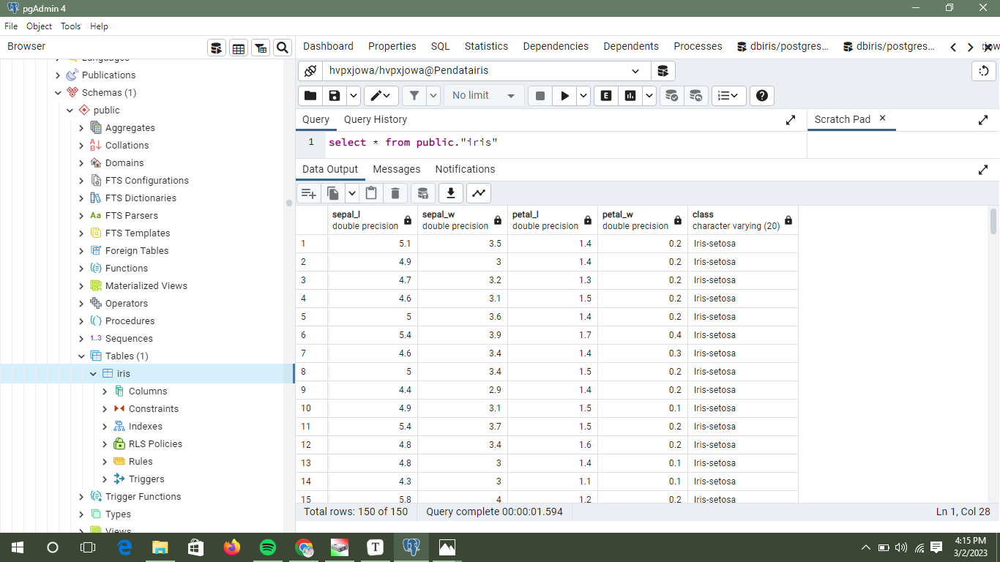

Cerita Mengumpulkan Data#
Nama : Whinta Virginia Putri
Nim : 210411100047
Tools:
Install Postgres
Install Power BI
Install XAMPP
Create Account ElephantSQL
Tahapan-tahapan untuk mengumpulkan data dari beberapa sumber:
ElephantSQL:
membuat akun elephant dengan nama “pendata” yang nantinya digunakan untuk server cloud
.png)
Membuat Instance dengan nama “Pendatairis”
.png)
Postgres / pgadmin :
Setelah instalasi postgres, lalu jalankan postgres / pgadmin
Import data dari github ke postgres :
buat database dengan nama “dbiris”
lalu buat table “iris” dengan cara klik kanan pada table dan pilih query tool
lalu salin sql dari link github berikut : https://gist.github.com/faustofjunqueira/ba97008616148653a9c633c066edaba9
buka query tool lalu paste sql yang sudah disalin setelah itu klik Excute.

Data telah selesai diimport untuk menampilkannya di query tool lalukan perintah sql “select * from public.”iris”” dan klik Excute

Menghubungkan Postgres dengan server ElephantSQL:
klik kanan pada server lalu pilih register dan pilih server
Setelah itu isi name dengan nama instance yang dibuat di ElephantSQL, lalu klik Connection dan isi host name dengan link server di instance, isi maintenance database dan username dengan User & Default database di instance yang telah dibuat dan terakhir isi password sesuai password yang diberi di instance jika sudah diisi klik save.
.png)
.png)
Sebelum mengimport data carilah nama database yang sesuai dengan User & Default database diinstance yang dibuat.
.png)
Lalu pilih schemas, pilih public setelah itu pilih table dan klik kanan table dan pilih query tool
setelah itu salin sql dari link github berikut : https://gist.github.com/faustofjunqueira/ba97008616148653a9c633c066edaba9
setelah salin sql kembali ke query tool dan paste sql yang sudah disalin setelah itu klik excute.
Data telah berhasil di import, selanjutnya untuk melihat data tulis perintah sql “select * from public.”iris””

Membuat server local di Postgres:
klik kanan pada server lalu pilih register dan pilih server
setelah itu isi name “localhostpendata”, lalu pilih connection dan isi hostname/address dengan “localhost” lalu isi password dengan password postgres.


Server local postgres telah berhasil dibuat.

Mysql :
Import csv ke mysql, sebelum melakukan import ke mysql lakukan export data iris dari postgres,
dengan cara klik kanan pada table iris lalu pilih import/export data, lalu centang/pilih export dan beri nama file lalu pilih csv jika sudah klik ok. Maka file csv sudah tersimpan.

Nyalakan XAMPP dan klik start pada apache serta mysql

lalu ke web browser dan tulis perintah “http://localhost/phpmyadmin/”
buatlah database “dbiris”

lalu pilih import dan pilih file csv yang akan di import setelah itu ganti format jadi csv dan klik import

Data telah behasil diimport ke mysql

Power BI :
Import csv ke Power BI:
sebelum melakukan import ke Power BI lakukan export data iris dari postgres,
dengan cara klik kanan pada table iris lalu pilih import/export data, lalu centang/pilih export dan beri nama file lalu pilih csv jika sudah klik ok. Maka file csv sudah tersimpan.
.png)
Jalankan Power BI pada menu home pilih get data lalu klik more, pilih Text/CSV dan klik connect.

Setelah memilih file csv setalah itu akan ada tampilan seperti dibawah ini dan klik load

Lalu setelah berhasil diimport maka tampilkan data dalam bentuk diagram.

Mengkoneksi Postgres ke Power BI, dan Import Data iris dari Postgres ke Power BI:
Jalankan Power BI pada menu home pilih get data lalu klik more, pilih PostgreSQL Database dan klik connect.

isi server dengan server instance yang sudah dihubungkan dengan postgresql tadi serta nama database nya
.png)
isi username dengan User & Default database instance serta password yang telah diberikan diinstance lalu klik connect.

setelah tampil seperti dibawah ini centang pada table public.iris lalu klik load

Data telah berhasil diimport tampilkan dalam bentuk diagram

Mengkoneksi Mysql ke Power BI, dan Import Data iris dari Mysql ke Power BI:
sebelum mengkoneksikan mysql ke power bi download mysql installer (https://dev.mysql.com/downloads/connector/net/)
Jalankan Power BI pada menu home pilih get data lalu klik more, pilih MySQL Database dan klik connect.

isi server dengan “localhost:3306” (3306 adalah port) lalu isi database dengan nama database yang sudah dibuat

pilih Database lalu isi Username “root” lalu isi password mysql/phpmyadmin dan klik connect.

setelah tampilannya seperti di bawah ini lalu centang di dbiris.iris (database dimysql) dan klik load

Data telah berhasil diimport centang setiap colom untuk menampilkannya

Berikut adalah cara mengumpilkan data dari beberapa sumber. Terimakasih telah membaca:))
Semoga bermanfaat…